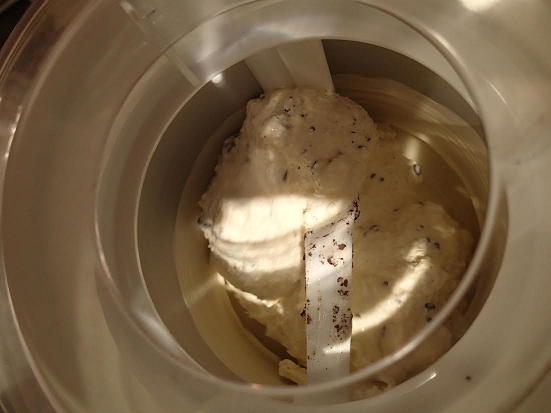

20150630 - Sugar Free Peppermint Chocolate Chip Custard Ice Cream
EDIT: Photo and updated ingredients...

Been experimenting with ketogenic friendly ultra-low-carb ice cream.
This, along with bacon-wrapped sour cream, is one of the perks of the extremely high fat and low carb life style.
First experiment didn't go as planned,
placing the result in the freezer was a mistake.
Apparently sugar in normal ice cream actually is the key component
which enables the ice cream to maintain a great texture when frozen.
Second pass, I'm keeping the result in the fridge.
Ingredients for part one,
1 pint - whole cream
3 - egg yokes
1/2 tsp - peppermint extract
6 drops - pure liquid stevia
Blend everything together in a blender on high.
Pour in a pan on the stove, stirring and slowly bring up to 160 deg F.
Pour in a chilled container, store in fridge until chilled.
Extra ingredients for part two,
1 - Lindt 90% chocolate square
Pour chilled mixture in ice cream maker,
along with chopped chocolate square.
Lindt 90% is better than the lower cocoa thanks to it's higher fat content.
Churn until mixture looks like ice cream.
Add to chilled container, store in fridge until chilled.
Eat. Turned out awesome. Going to try higher peppermint next time and maybe another drop of stevia...